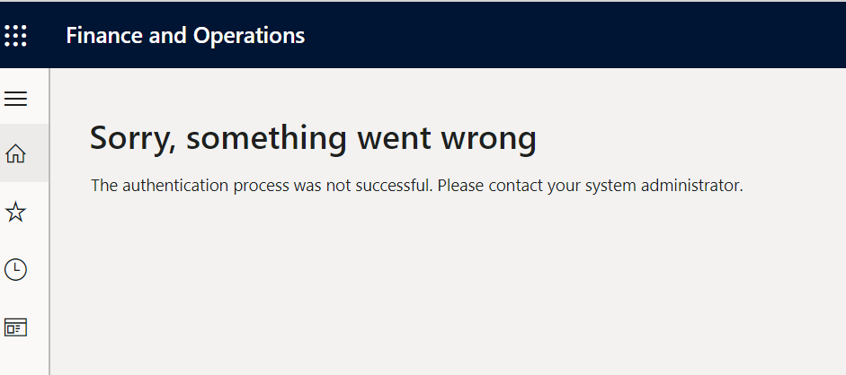

Starting November 15, 2023, Microsoft stopped installing S2S certificates to newly deployed cloud development environments. As a result, all functions that required integration with Microsoft Entra (Azure AD) no longer work out of the box. The link above contains a solution to bring back the ability to import users, but does not solve the error of importing Electronic reporting (ER) configurations:

Instead, it refers to an article on how to set up a File system repository and import configurations from local files, which is not ideal. If you want to continue using online repositories from Microsoft or RCS (which is by the way deprecated as of 10.0.39), I’ve found the solution below. Beware that it generates and adds the VM certificate to your tenant the same way it was done before November 15, which Microsoft now advises against.
-
Download and install d365fo.tools. It adds a command to generate and install the certificate used for Entra ID integration
-
Install MSOnline PowerShell package by running the following command:
Install-Module -Name MSOnline
- Run the following PowerShell commands (you must have privileges to administer tenant)
<# Microsoft Dynamics ERP Application id #>
$appid = "00000015-0000-0000-c000-000000000000"
<# This will generate CHEAuth.cer file on your desktop, install it to the certificate store and update D365FO web.config with the thumbprint of the certificate #>
New-D365EntraIntegration -ClientId $appid
<# Replace <Path-to-Certificate> to with the full path to a CHEAuth.cer file #>
$cer = New-Object System.Security.Cryptography.X509Certificates.X509Certificate
$cer.Import("<Path-to-Certificate>")
$binCert = $cer.GetRawCertData()
$credValue = [System.Convert]::ToBase64String($binCert);
<# Add the certificate to the Microsoft Dynamics ERP application #>
Connect-MsolService
New-MsolServicePrincipalCredential -AppPrincipalId $appid -Type asymmetric -Value $credValue -Usage verify
- Restart IIS using the
iisresetcommand.
Now connecting to online ER repositories and importing users from Entra ID should work.